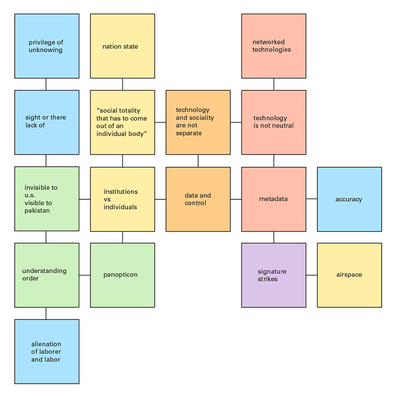
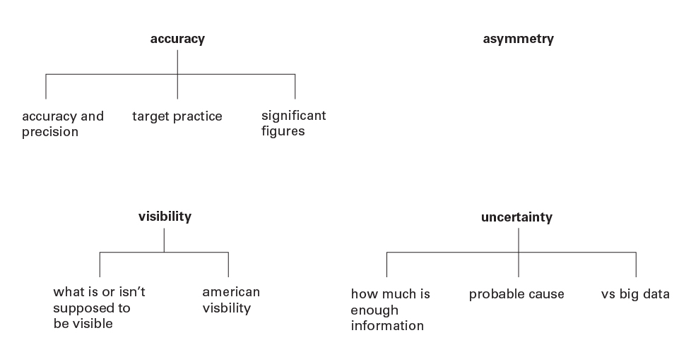
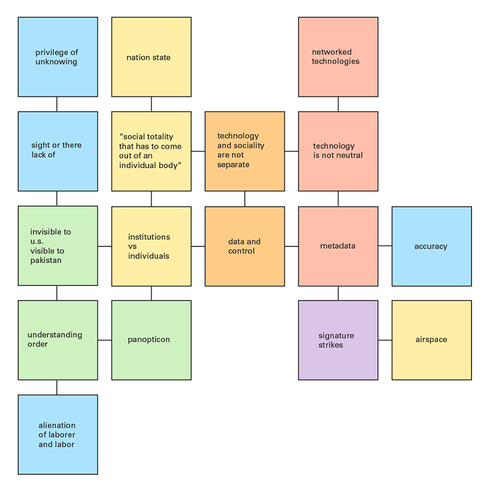
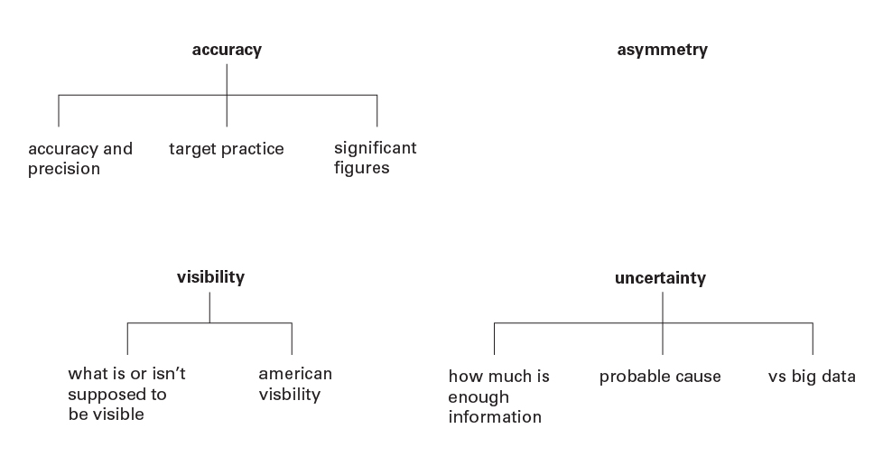

Speculations on mass surveilance and drones
In a future of domestic surveillance drones, local police forces introduce unmanned aerial ice cream vehicles. Instead of an object of invisibility, drones become an object of hypervisibility, dropping sweet treats to sedate the general public into accepting militarized police forces and increased surveillance. This piece prompts a conversation about out activities abroad: what differentiates our actions abroad from our actions at home? It also questions our relationship with authority and police figures, especially how children perceive them.
Unmanned aerial vehicles (UAVs), or drones, are used by militaries for reconnaissance, search and rescue, surveillance, and strike missions. Cruising at high altitudes, UAVs are designed to be invisible for maximum efficacy. The U.S. military insists that drones effectively target enemies of the state, but innocent civilians are often caught in the crossfire. Metadata, phone records and online communications, are fed into algorithms to identify terrorists. These individuals, selected using incomplete data, are placed on a kill list.
Military grade UAVs have been used domestically a handful of times during emergencies and natural disasters, but in light of the current technological trends and social forces, it is not hard to imagine drones being used to further mass surveillance.
More detailed process and thoughts can be found here.
<< Back
 


